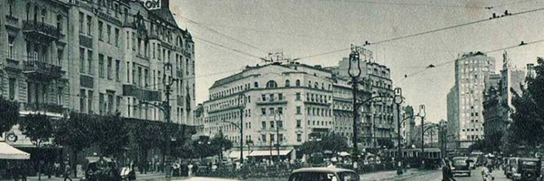
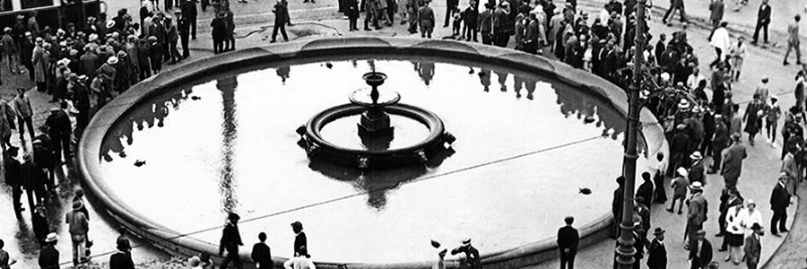
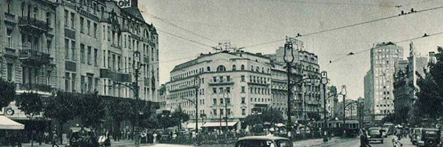
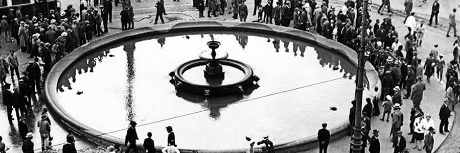

Заборављени
Београд
Престоница Србије и Југославије
Започета интензивна изградња Београда по његовом дефинитивном ослобођењу од Турака, настављена је и у првим годинама XX века. Ипак, сметњу даљем развоју представљала је чињеница да је Београд био погранични град према Аустрији и представљао је препреку њеној освајачкој политици према Балкану.
У плановима аустријског и немачког продирања на Балкан тражен је повод да се војно нападне Србија. Нађено је у атентату у Сарајеву, 28. јуна 1914. године на аустро-угарског Престолонаследника Франца Фердинанда. Ултиматумом, потом и нападом на Србију отпочео је Први светски рат. Нападом који је уследио између 6. и 7. октобра 1915. године, Аустријска војска је успела да уђе у град. Агонија Београда трајала је три године. Пробојем Солунског фронта, Српска војска и делови савезничке војске ослободили су Београд 1. новембра 1918. године. Током Првог светског рата, Србија је изгубила 28% целокупног становништва, а Београд је међу градовима који су највише страдали.
Одмах по ослобођењу Београда је постао престоница новостворене Краљевине Срба, Хрвата и Словенаца, што му је дало још већи импулс за брзу изградњу. Припајањем Земуна, Београд престаје да буде погранични град и брзо се развија. Осим наглог ширења према Авали, Косутњаку, Чукарици и Дунаву, унутар старог градског језгра подигнут је велики број објеката и грађевина, чиме Београд добија облике европског града. Али, после убиства краља Александра I Карађорђевића, јачале су снаге које су исказивале све веће симпатије за носиоце новог светског поретка - Хитлера и Мусолинија. То је резултирало приступањем Тројном пакту 25. марта 1941. године, да би два дана касније дошло до државног удара, смењивања Владе и великих народних демонстрација.
Само неколико дана после тога Београд је постао мета страховитих бомбардовања и разарања. У налету Немачке авијације 6. и 7. априла 1941. године на Београд, од бомбардовања је погинуло 2274 лица. Лакше или теже је оштећено неколико хиљада зграда. Од културно-историјских споменика потпуно је спаљена Народна библиотека. Немачке јединице су ушле у Београд без икаквог отпора 12. априла 1941. године. Уз све прогоне и патње које су наносили немачки окупатори, грађани Београда су морали да поднесу и знатне жртве због савезничког бомбардовања посебно у пролеће и јесен 1944. године. Порушени су били многи објекти, стамбене зграде, срушени сви мостови на Сави и Дунаву, живот је изгубило око 1160 грађана. Током Другог светског рата Београд је изгубио око 50.000 становника и претрпео непроцењиве штете и разарања. Београд су ослободиле јединице Народноослободилачке војске Југославије и Црвене армије 20. октобра 1944. године. Упркос огромним разарањима и општој немаштини, Београд је лагано почео да се опоравља од тешких последица рата и окупације. Обнављају се порушени привредни објекти и граде нови, нарочито индустриски капацитети (пре свега у области металне, хемијске и електро индустрије), развија се саобраћај, обнављају се и проширују културне и просветне институције. На политичком плану, доношењем Декларације о проглашењу ФНРЈ као савезне државе републичког облика, 29. новембра 1945. године, укинут је монархијски облик владавине у Југославији и званично започела Комунистичка владавина Јосипа Броза Тита. Проглашењем Устава ФНРЈ 31. јануара 1946. године, установљена је Социјалистичка држава заједница југословенских народа и започела национализација имовине предратних индустријалаца.
Доношењем Устава 1974. године држава је кренула путем конфедерације. Нерешени национални, етнички, политички, економски и други проблеми у земљи, довели су до распада Југославије 1991. чиме је окончан најдужи периода мира на Балкану у XX веку. Од 1992. године Београд је престоница СР Југославије, коју чине Република Србија и Република Црна Гора, од фебруара 2003. Београд је главни град Државне заједнице Србија и Црна Гора. Маја 2006. Црна Гора проглашава самосталност и од тада је Београд главни град самосталне државе Републике Србије.